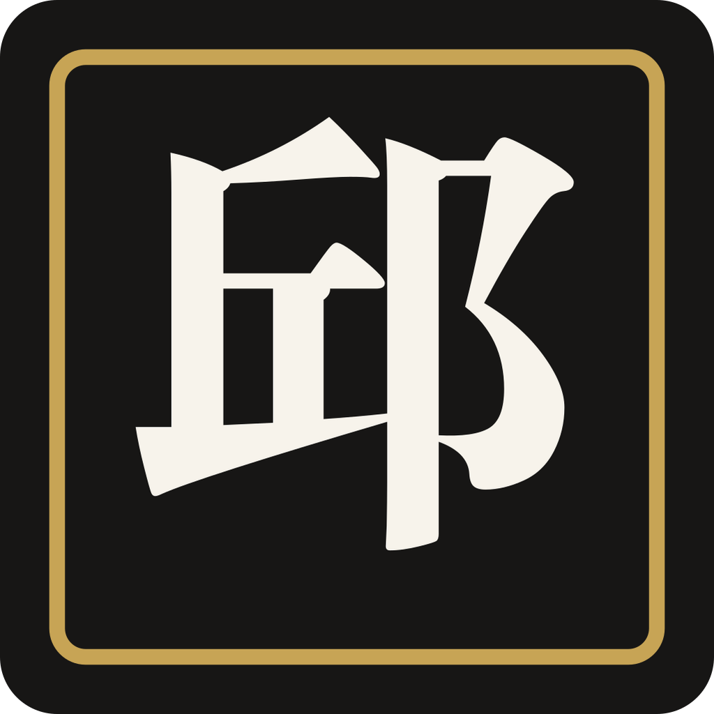
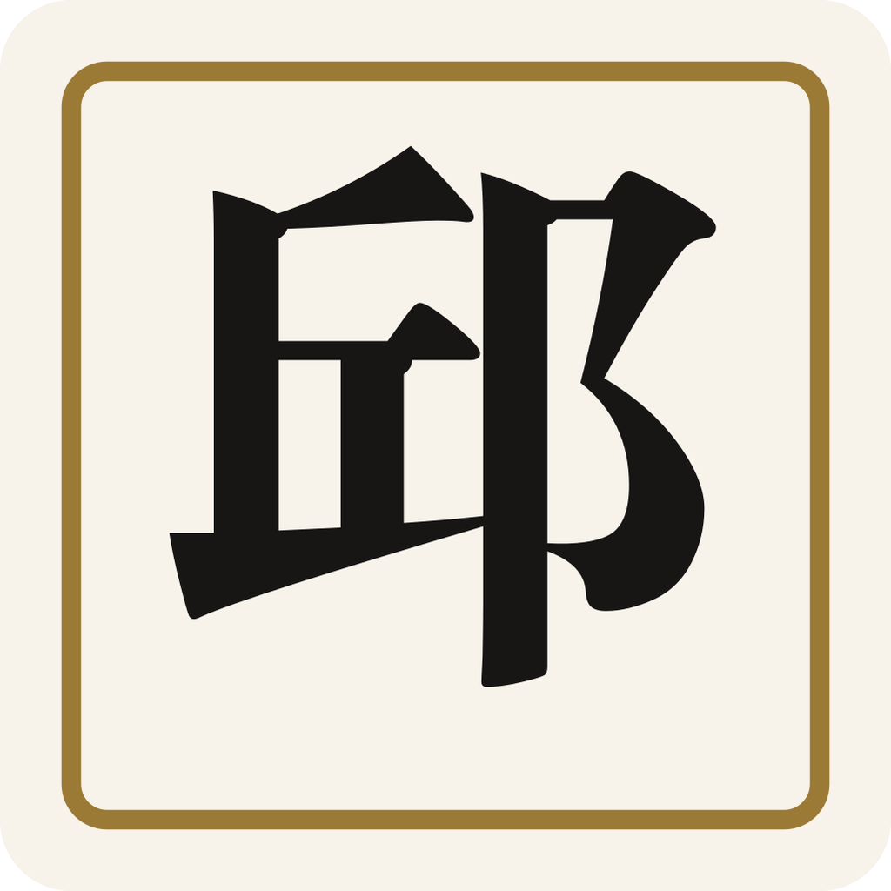
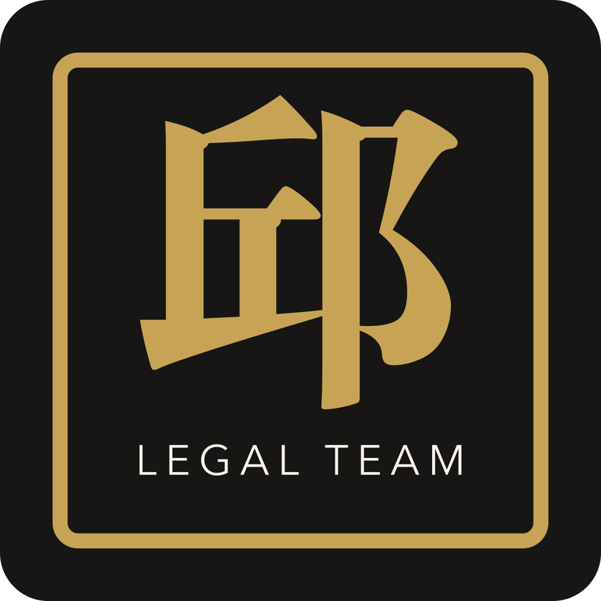
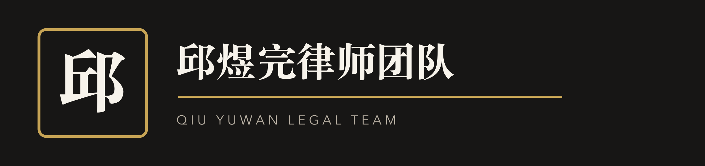
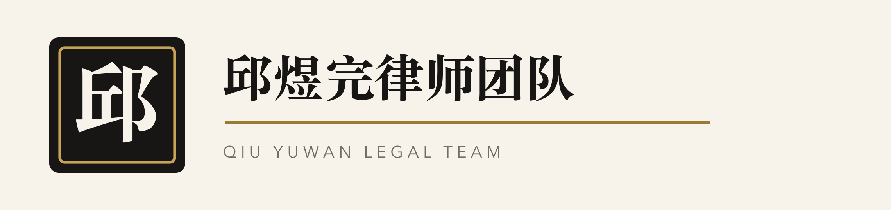
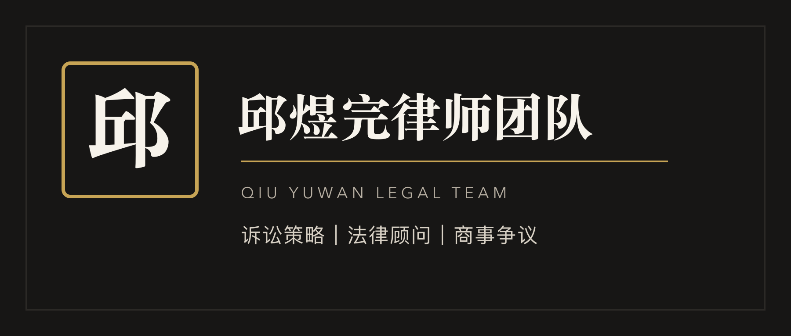

Recommended Avatar
深色邱字方标
公众号头像首选。单字足够大，圆形裁切后仍能清楚看出是「邱」，黑金配色也更贴近法律服务的稳重气质。
这版把「邱」字放到第一识别层，优先服务网页页眉、公众号头像和公众号封面。远看先认出“邱”，近看再进入律师团队的专业感。

Recommended Avatar
公众号头像首选。单字足够大，圆形裁切后仍能清楚看出是「邱」，黑金配色也更贴近法律服务的稳重气质。

Light Background
适合网页浅色导航、PPT、白底文档页眉。与深色版同一结构，方便形成统一视觉系统。

Formal Seal
用于文章末尾、案例海报角标或正式资料。它比头像版更像品牌章，但小尺寸时不如单字版清楚。

Website Header Dark
适合放在网站首页顶部、深色页脚、深色海报。左侧大「邱」负责识别，右侧全称负责品牌说明。

Website Header Light
适合当前个人网站的浅色区域，也适合公众号文章插图、名片和打印材料。

WeChat Cover
按公众号封面比例做了横向排版，左侧「邱」作为视觉锚点，右侧团队名称和业务关键词适合放在文章首图。